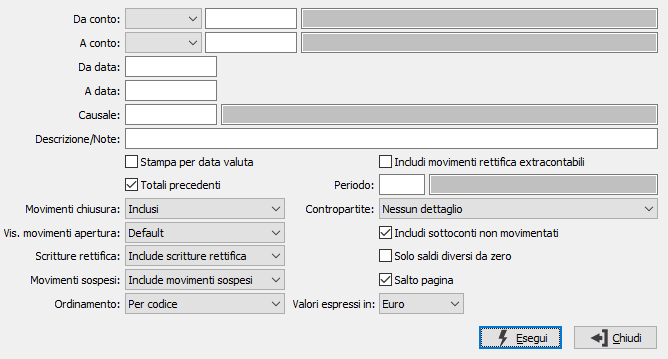

Stampa situazione sottoconti
Il programma genera la stampa, in anteprima o su file, dei movimenti contabili relativi ad uno o più sottoconti. Effettuata la scelta, compare la seguente maschera video:

DA TIPO CONTO/A TIPO CONTO: campo obbligatorio; indica la tipologia dei conti utilizzati come limiti: sottoconti, clienti o fornitori.
DA CONTO: codice del sottoconto, presente in Anagrafica Sottoconti, da cui si desidera iniziare la stampa. Confermando a vuoto, la selezione inizia con il primo sottoconto valido. Sul campo è attivo lo zoom F9.
A CONTO: codice del sottoconto, presente in Anagrafica Sottoconti, con cui si desidera concludere la stampa. Confermando a vuoto, la selezione termina con l’ultimo sottoconto valido. Sul campo è attivo lo zoom F9.
DA DATA: Indicare l’eventuale data da cui si desidera iniziare la stampa dei movimenti contabili relativi ai sottoconti indicati. Confermando a vuoto, l’analisi inizia con il primo movimento valido dell'esercizio corrente.
A DATA: Indicare l’eventuale data a cui si desidera terminare la visualizzazione dei movimenti contabili relativi al sottoconto indicato. Confermando a vuoto, l’analisi termina con l’ultimo movimento valido dell'esercizio corrente.
CAUSALE: consente di specificare un'eventuale causale contabile a cui restringere l'analisi dei movimenti. Sul campo sono disponibili le funzioni di ricerca (F9).
DESCRIZIONE/NOTE: consente di ricercare una parte di testo all'interno delle descrizioni e/o delle note presenti nei movimenti.
STAMPA PER DATA VALUTA: check box significativo solo per i sottoconti del conto Banche, se per gli stessi è stata gestita la data di valuta. Consente di ottenere la stampa ordinata per data di valuta anzichè per data di registrazione.
TOTALI PRECEDENTI: check box, significativo quando la data di inizio selezione non corrisponde alla data di inizio esercizio, per definire la modalità di calcolo dei totali. La presenza della spunta determina la stampa dei totali dare ed avere precedenti e il calcolo del saldo a partire da inizio esercizio; l’assenza della stessa determina invece il calcolo del saldo parziale ottenuto della totalizzazione dei soli movimenti stampati.
MOVIMENTI CHIUSURA: significativo solo se le date di selezione si riferiscono ad un esercizio già chiuso, per definire le modalità di trattamento dei movimenti di chiusura. E' possibile includere tali movimenti e determinare il calcolo di un saldo a zero; esclude invece i movimenti di chiusura, consentendo il calcolo del saldo del sottoconto prima delle operazioni di chiusura oppure stampare solo i movimenti di chiusura.
VISUALIZZA MOVIMENTI APERTURA: definisce il criterio per cui saranno visualizzati o meno i movimenti di apertura; il parametro è significativo solo per chi non effettua l'apertura in data 01/01. Valori previsti:
Default: i movimenti saranno visualizzati solo se presenti nel periodo d'analisi richiesto (visualizzati con data del movimento).
Data inizio esercizio: i movimenti saranno visualizzati anche se successivi al periodo d'analisi richiesto (visualizzati con data inizio esercizio).
Data del movimento: i movimenti saranno visualizzati anche se successivi al periodo d'analisi richiesto (visualizzati con data del movimento).
SCRITTURE RETTIFICA: combo box per definire le modalità di trattamento di eventuali scritture di rettifica dell’esercizio precedente registrate nel corrente esercizio in date comprese fra le due date di selezione.
MOVIMENTI SOSPESI: combo box per definire le modalità di trattamento di eventuali movimenti sospesi registrati in date comprese fra le due date di selezione. I valori sono significativi solo per la versione Enterprise che consente di gestire tale tipo di transazione.
ORDINAMENTO: definisce il criterio di ordinamento della stampa: per codice o per ragione sociale.
INCLUDI MOVIMENTI DI RETTIFICA EXTRACONTABILI/PERIODO: consente di includere i movimenti di rettifica extracontabili relativi ad un determinato periodo di bilancio o al periodo richiesto nel campo successivo al fine di avere una scheda contabile che quadra con il bilancio anche in presenza di movimenti di rettifica extracontabili.
CONTROPARTITE: indica se si desidera elencare in stampa le contropartite, valori possibili: nessun dettaglio, solo contropartite di segno opposto, tutte le contropartite.
INCLUDI SOTTOCONTI NON MOVIMENTATI: check box che estende l’analisi anche ai sottoconti che non sono stati movimentati (casella con segno di spunta).
SOLO SALDI DIVERSI DA ZERO: definisce se stampare solo i conti che hanno saldo diverso da zero (casella con segno di spunta) o tutti i conti (casella vuota).
SALTO PAGINA: definisce se stampare un conto per pagina (casella con segno di spunta).
VALORI ESPRESSI IN: combo box per definire la divisa in cui visualizzare i movimenti selezionati.
Inseriti tutti i parametri, premendo il bottone Esegui viene lanciata la stampa.